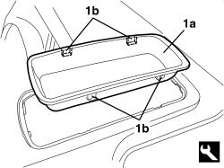

7040L76 CENTRE REAR ODDMENTS COMPARTMENT - R.R.
- Path
- Procedures > 70 FITTINGS > 7040 BODY INTERIOR FITTINGS AND TRIM > 7040L PASSENGER COMPARTMENT FLOOR COVERING > 7040L76 CENTRE REAR ODDMENTS COMPARTMENT - R.R.
- Kind
- repair procedure (removal / refitting; the operation number is the code)
- Applies to
- engines: 2.2 JTS, 3.2 JTS; all production periods; only with equipment: Spider
- Interactive page
- https://sloeber94.github.io/elrnDB-aBrrSpdr/en/#/946004133
Applies to: engines: 2.2 JTS, 3.2 JTS; all production periods; only with equipment: Spider
 Removing
Removing
 Refitting
Refitting- Move the front seat into the front end of travel position.
1. Remove storage compartment (1a), undoing flexible retainers (1b) with the special tool.
Tool | Description | Function | Validity |
|---|---|---|---|
1823014000 | Knife | Retainer removal |

Applies to: engines: 2.2 JTS, 3.2 JTS; all production periods; only with equipment: Spider
Refitting
Removing- Check that the storage compartment is not damaged.
- Position the storage compartment and attach the retainers.
- Move the front seat to an intermediate position.